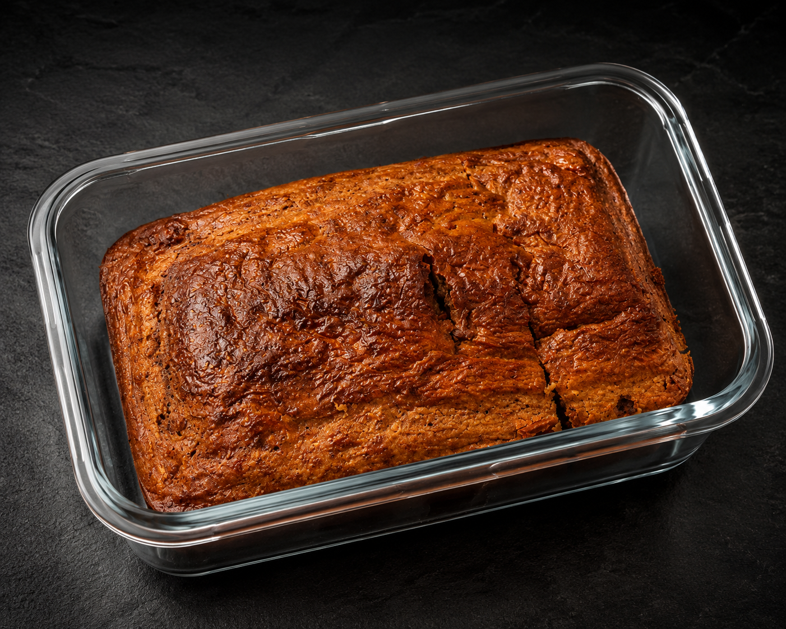

Bowlcake pancake protéiné

Ingrédients
- 5g de baking powder
- 50g de skyr
- 30g de whey vanille
- 1 œuf
- 70g de lait demi-écrémé
- 40g de flocons d'avoine
Préparation
- Mélanger et mixer ensemble la baking powder, le skyr, la whey vanille, l'œuf, le lait demi-écrémé et les flocons d'avoine.
- Verser le tout dans un plat allant au four.
- Enfourner à 180°C pendant 30 minutes.
- Laisser tiédir quelques instants avant de servir.
Valeurs nutritionnelles (approx.)
Par portion : 409 kcal • 44 g protéines • 11 g lipides • 32 g glucides • 4 g fibres